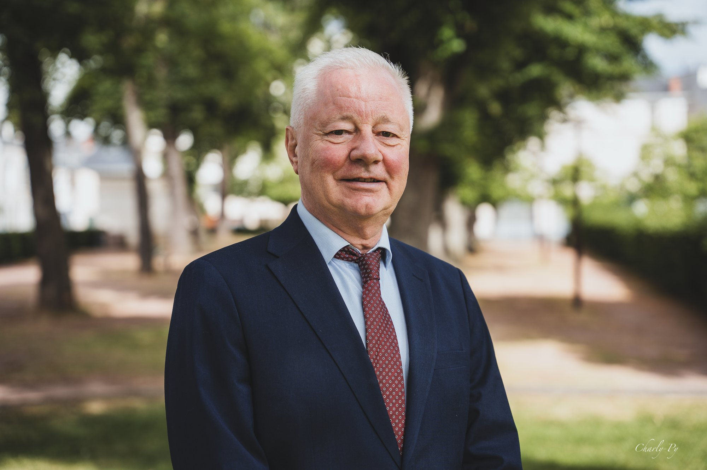

Régis Blanchet, candidat aux élections sénatoriales, avec sa suppléante Géraldine Rouah
Élections sénatoriales · Dimanche 27 septembre 2026
Votre choix du 27 septembre engage la représentation de notre territoire pour les années à venir. Je sollicite votre soutien et je m'engage à exercer mon mandat avec exigence, disponibilité et fidélité.
Régis Blanchet
Soutiens
Marc Fleuret, président du Conseil départemental de l'Indre, Hervé Morin, président des Centristes, et David Lisnard, président de Nouvelle Énergie, apportent leur soutien à la candidature de Régis Blanchet.
Échangeons
Vous souhaitez échanger avec Régis Blanchet, poser une question ou convenir d'un rendez-vous ? N'hésitez pas à le joindre directement.
Prendre contact